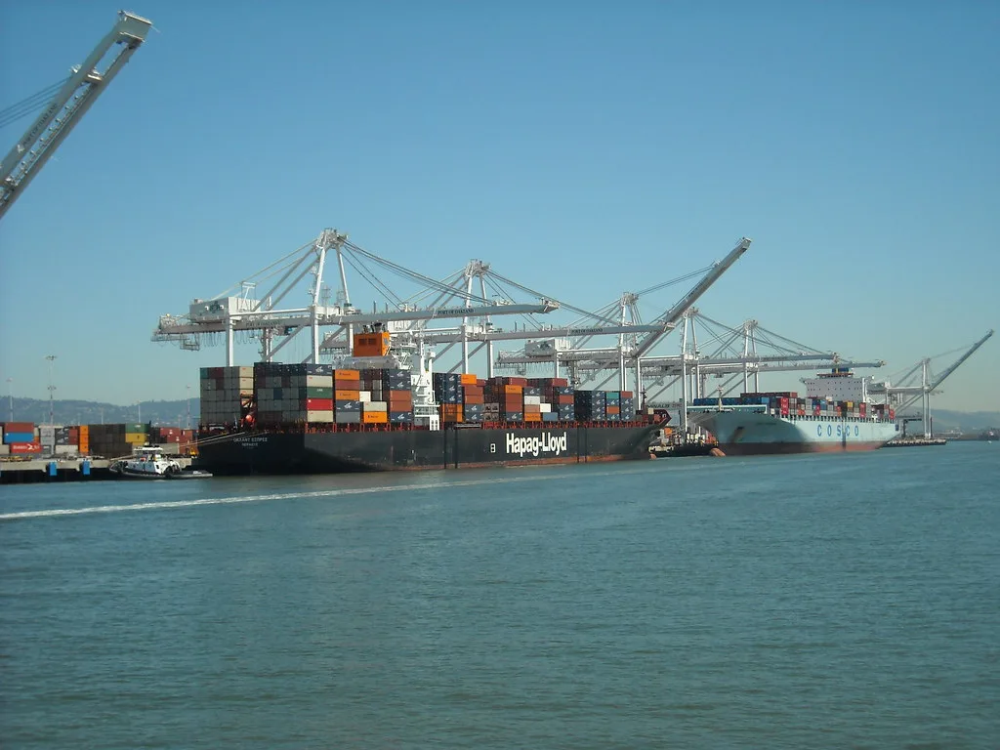

7월 수출 989억달러 '역대 2위'…반도체 두 달 연속 400억달러 돌파
산업통상자원부가 발표한 7월 수출입 동향에 따르면, 지난달 수출액이 988억9000만달러를 기록하며 월간 기준 역대 2위 실적을 달성했다. 이는 전년 동월 대비 62.8% 증가한 수치로, 사상 처음 월 수출 1000억달러를 넘어섰던 지난 6월(1022억5000만달러)에 이어 두 번째로 높은 기록이다. 두 달 연속 900억달러를 훌쩍 넘는 수출 실적을 이어가면서 올해 연간 수출 1조달러 달성 기대감도 커지고 있다.
이번 실적을 이끈 것은 단연 반도체였다. 7월 반도체 수출은 410억1000만달러로 전년 대비 178.8% 급증하며 6월에 이어 두 달 연속 400억달러를 웃돌았다. 메모리 반도체 고정가격이 꾸준히 오른 데다, 인공지능(AI) 서버 투자 확대에 따른 수요 증가가 실적을 뒷받침했다는 분석이다. 반도체 한 품목이 전체 수출의 상당 부분을 차지할 만큼 비중이 커진 셈이며, 낸드플래시와 D램 모두 고른 성장세를 보였다.

무역수지도 호조를 보였다. 7월 무역수지는 303억2000만달러 흑자를 기록해 18개월 연속 흑자 행진을 이어갔다. 올해 1월부터 7월까지 누적 무역수지 흑자 규모는 1680억1000만달러로, 지난해 같은 기간과 비교해 1341억달러나 늘어난 수치다. 반도체 수출 호조가 전체 무역수지 개선에 결정적인 역할을 한 것으로 풀이되며, 대외 여건 불확실성 속에서도 견조한 수출 흐름이 이어지고 있다는 평가다.
품목별로 살펴보면 20대 주력 수출 품목 가운데 가전을 제외한 19개 품목의 수출이 늘어난 것으로 나타났다. 반도체 외에도 자동차, 바이오, 화장품 등 여러 품목에서 수출 신기록이 이어지며 전반적인 수출 경기가 견조한 흐름을 보이고 있다는 평가다. 다만 가전 품목은 글로벌 수요 둔화와 경쟁 심화 등의 영향으로 상대적으로 부진한 모습을 보였으며, 산업통상자원부는 관련 업계와의 소통을 통해 대응 방안을 모색하고 있다.

국가별로는 대중국 수출이 두드러진 성과를 냈다. 7월 대중국 수출은 216억8000만달러로 전년 대비 96.2% 증가하며 두 달 연속 200억달러를 넘어섰다. 반도체를 중심으로 한 중국 수출 회복세가 뚜렷해지면서, 한때 부진했던 대중국 교역이 다시 활기를 띠고 있다는 분석이 나온다. 대미국, 대아세안 수출 역시 전반적으로 안정적인 흐름을 유지한 것으로 나타났다.
다만 일각에서는 반도체 의존도가 지나치게 높아지는 데 대한 우려도 제기된다. 특정 품목의 수출 실적이 전체 지표를 크게 좌우하는 구조가 이어질 경우, 반도체 업황이 꺾일 때 수출 전반이 흔들릴 수 있다는 지적이다. 이 때문에 정부와 산업계에서는 반도체 외 품목의 경쟁력을 함께 끌어올려야 한다는 목소리도 나오고 있으며, 중소 수출기업에 대한 지원 확대 필요성도 함께 제기된다.
산업통상자원부는 하반기에도 반도체를 비롯한 주력 품목의 수출 호조가 이어질 것으로 내다보고 있다. 다만 미국을 비롯한 주요국의 통상 정책 변화, 글로벌 반도체 업황 변동성 등은 여전히 변수로 남아 있다. 정부는 수출 활력을 이어가기 위한 지원책을 지속적으로 마련하고, 연내 첫 연간 수출 1조달러 달성을 목표로 남은 하반기 총력을 기울이겠다는 방침이다.